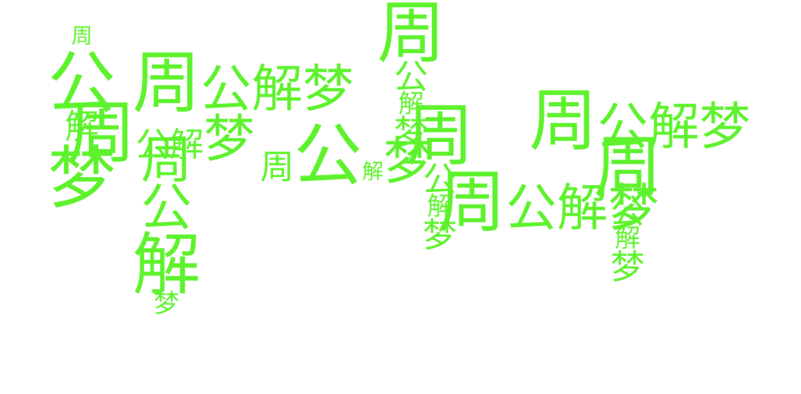
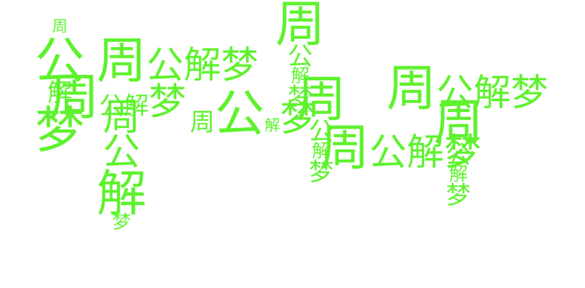

《周公解梦》，是根据人的梦来卜吉凶的一本解梦书籍，它对人的七类梦境进行解述。"The Interpretation of Dreams by Zhou Gong" is a book of dream interpretation that predicts good or bad luck based on people's dreams. It interprets seven types of dreams. 《周公解梦》，是根据人的梦来卜吉凶的一本解梦书籍，它对人的七类梦境进行解述。"The Interpretation of Dreams by Zhou Gong" is a book of dream interpretation that predicts good or bad luck based on people's dreams. It interprets seven types of dreams.《周公解梦》，是根据人的梦来卜吉凶的一本解梦书籍，它对人的七类梦境进行解述。"The Interpretation of Dreams by Zhou Gong" is a book of dream interpretation that predicts good or bad luck based on people's dreams. It interprets seven types of dreams.


WELCOME
Welcome to Dreamland Syndicate. Where you will be able to record your dreams and get your future predictions based on the Chinese dream prediction book “Zhou Gong’s dream prediction dictionary” and your personal tarot card.
周
公
解
梦